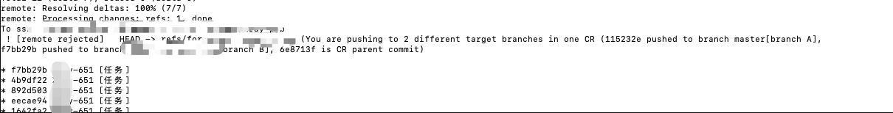
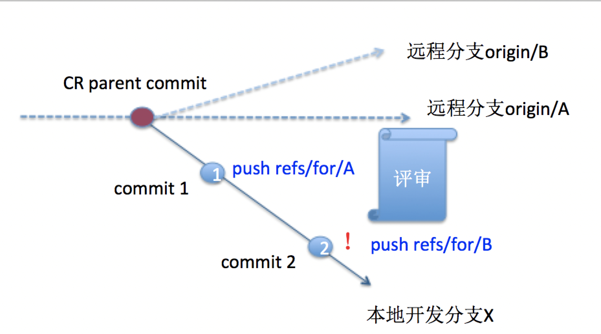
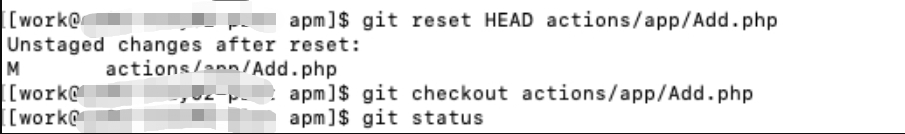
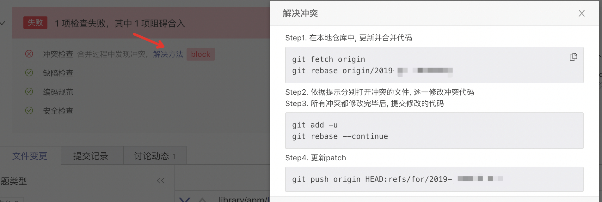

本文首发于微信公众号：程序员乔戈里 转载请注明：https://blog.csdn.net/WantFlyDaCheng/article/details/102538508

上面图片中有6e8713f is CR parent commit 这行提示，划重点，待会要用到。
你当前的操作场景如下图，由于一次CR(评审)的多个commits不能push到不同的refs/for/[分支名]（可能导致后续评审合入merge failed）：

评审是啥意思，这里解释一下。本地开发的流程首先是从自己远程的分支A拉到本地，远程分支是master分支的一个clone,本地完成开发后，需要提交到自己的远程分支，提交以后必须由其它人评审代码（code reviewe）,其它同事评审的时候主要找出不合规范和逻辑的地方，你需要修改完成以后，才能合入到你的远程分支A，然后再从你的远程分支A合到master上，这样就完成了代码入库。
$git reset --soft [CR parent commit] (对应CR parent commit见push报错信息.也就是有6e8713f is CR parent commit)
$git commit -m"commit message"
$git push origin HEAD:refs/for/[branch B] 
1.撤销缓存区的修改
git reset HEAD filenamegit checkout --filename
上图是提交代码时候，发生了冲突，依旧很贴心，百度这套代码审查系统依旧给了提示，照着提示操作一波。
git fetch origin
git rebase origin/mastergit add -u
git rebase --continuegit push origin HEAD:refs/for/master如何撤销commit提交，熟练的执行完以下两条命令以后：
git add *
git commit -m "提示信息A"你发现自己的提示信息写的不对，想git commit -m "提示信息B"，但是由于已经git commit 过了，会提示你没有什么需要git commit的，这个时候如何撤销git commit呢？
git reset --soft HEAD^这样上一次提交就被撤回了，然后继续执行git commit -m "提示信息B" 即可。
如果是头条用户，可以在我的头条号 程序员乔戈里 私信我 资源 获取价值29998元的编程和考研资料
觉得文章不错的欢迎关注我的WX公众号：程序员乔戈里
我是BAT大厂后台开发工程师，专注分享技术干货/编程资源/求职面试/成长感悟等,关注送5000G编程资源和自己整理的一份帮助不少人拿下Offer的整理一份面试资料《技术面试必备基础知识》，覆盖了Java核心技术、JVM、Java并发、SSM、微服务、数据库、数据结构、Leetcode 题解、、C++、Python、后端面试、操作系统、计算机网络、系统设计等等。关注公众号并回复 888 领取，免费下载CSDN资源。
如果你对算法感谢趣，欢迎关注我的公众号 图解算法，使用Python/Java/前端/C++四种语言对Leetcode和剑指offer进行漫画讲解，帮助你快速搞懂算法！